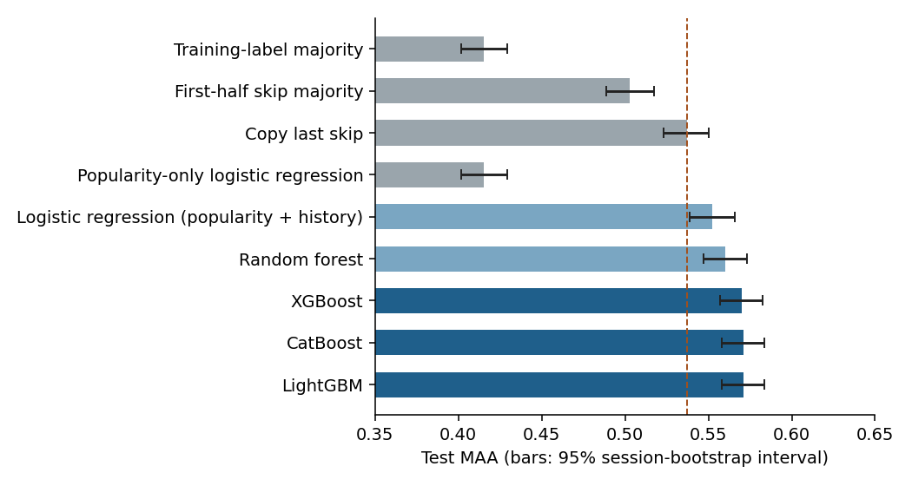
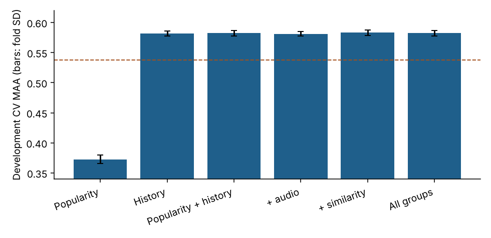

Results
Results on the test sessions
The boosted-tree model (LightGBM) reaches a test MAA of (95% interval to ). The best simple rule, copy last skip, reaches . The model is better by , and this gain is larger than the sampling noise. It is a clear but moderate gain, not a huge one.

Is the difference real?
The table compares the boosted-tree model with each other model, session by session. "Clearly better" means the 95% interval is above zero.
The model is clearly better than every simple rule and than the logistic regression, and also better than the random forest (the interval is above zero, but the gain is only about ). The three boosting libraries are only apart ( to ). The 95% interval is about ± , so we cannot say that one library is better than another. The development estimate for the model was . The test score is about lower. The two use different sessions, and the gap is inside the test interval.
Which kind of information matters?
We trained the same LightGBM settings with different groups of inputs. This uses the development data only (15 folds).

- Popularity alone is almost useless. Its AUC is (0.5 means no signal). Its MAA () is even below the majority rule (), because MAA also punishes guesses that change back and forth without a real signal.
- Listening history gives almost everything. History alone already gives .
- Similarity and audio add very little. Adding similarity changes the score by and adding audio by . The spread between folds is , which is larger than both changes. So we cannot say that audio or similarity features help in this study.
Share of the final model's learning that comes from each group
The most used single features are:
Names starting with re_ describe how the first-half songs ended (for example, re_trackdone is the share of history songs that played to the end). A song that played to the end was not skipped, so these features carry the same information as the skip history. They are allowed, because they come from the first half only.
Try it yourself: change the first half
Choose one of 24 test sessions. Click the squares of the first half to change a song between "kept" and "skip". The page then recalculates the skip probability of every upcoming song with the real model (the trees are loaded into your browser). We recalculate everything that depends on the skip pattern: skip rate, last skips, skip streak, and the distances to kept and skipped songs. All other inputs (how songs ended, pauses, where the music came from, audio features) keep their recorded values. So this shows how sensitive the model is to the skip pattern. It does not tell you what a real listener would do.
Loading the model…
First half: click a square to switch between kept and skip.
| Song | Recorded p(skip) | Edited p(skip) | Prediction | Actual | Change |
|---|